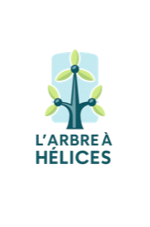

Diaporamas CDA
Slides Reveal.js construits à partir des supports Markdown.
Voir le dépôt GitHub
Présentation du titre
Présentation du titre CDA
Vision globale du titre et du parcours
Introduction et référentiel
Contexte, référentiel et attentes
Certification, livrables et oral
Préparation du dossier et de l'oral
Conception MERISE et UML
MCD/MLD/MPD, cardinalites, use case, activite, sequence
Architecture en couches vs Clean (TypeScript)
Comparatif, arborescences, MVC, exemples TypeScript, frameworks et cas d'usage
Glossaires
Glossaire CDA
Termes clés du titre CDA
Glossaire architecture
REST, MVC, Clean Architecture, Front et middleware
Glossaire tests
Tests unitaires, integration, E2E, mock/stub et exemples JS/PHP
Glossaire SOLID
Principes SOLID avec exemples TypeScript
Glossaire gestion de projet technique
Cadrage, backlog, priorisation, estimation, Scrum, risques et qualite
TP
Atelier interactif Q/R - Agilite Scrum
Questions/reponses dynamiques pour animer le cours (avec suivi maitrise/a revoir)
TP J1 - Expression du besoin (Films d'art et essai)
Atelier de cadrage: vision, MVP, acteurs, backlog initial, risques
Trame de rendu J1 - Films d'art et essai
Modele de rendu a remplir en equipe pendant la premiere journee
Correction TP J1 - Expression du besoin
Exemple de rendu complet (contexte, perimetre, acteurs, risques)
Support TP 2h - MVC TypeScript en couches
Consignes: Router, Controller, Service, Repository, Middleware
Starter MVC (port 3003)
Starter dedie au support MVC TypeScript en couches
Exercice MVC (port 3003)
Mini API MVC avec PostgreSQL pour atelier de prise en main
Exercice Clean (port 3002)
Mini API clean architecture avec use case et repository PostgreSQL
Starter Cart - SOLID TypeScript
TP panier: switch memory/postgres + architecture en couches
Pack supports architecture
Chapitres architecture (couches, MVC, composant, hexa, comparatifs, TP)